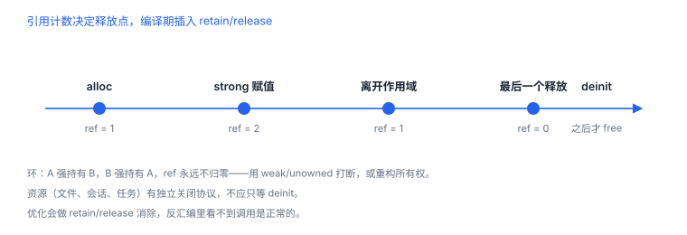

ARC 与对象生命周期
ARC 是编译器插入的引用计数操作，不是垃圾回收
ARC 在编译期往代码里插入 retain/release（Swift 侧是 swift_retain/swift_release），运行期仍靠引用计数决定何时释放。因此它能解决“忘记配对”，解决不了环、资源与并发。
1. 插入点：retain/release 出现在哪
| 场景 | 编译器插入 | 观察方式 |
|---|---|---|
| 强引用赋值/传参 | retain | 反汇编可见符号调用 |
| 强引用离开作用域 | release | 优化后可能被消除 |
| 返回对象 | autorelease（ObjC）/ 直接返回（Swift） | autorelease 池行为 |
| weak 读写 | 加锁访问 weak 表 | 有额外开销 |
优化会做 retain/release 消除，所以“反汇编里没看到 retain”不代表没有所有权语义，只代表被优化掉了。
2. 四种所有权
| 限定词 | 语义 | 目标释放后 | 典型用途 |
|---|---|---|---|
strong | 持有 | 目标保持存活 | 拥有关系 |
weak | 不持有 | 自动置空 | delegate、回调用 |
unowned | 不持有，假设存活 | 访问触发运行时错误 | 生命周期可证明 |
copy（ObjC） | 持有副本 | — | 不可变值语义 |
Swift：弱引用回调与释放观察
final class Loader {
var onFinish: (() -> Void)?
func start() {
onFinish = { [weak self] in
guard let self else { return }
self.finish()
}
}
deinit { print("Loader deinit") }
private func finish() {}
}
3. 环在哪：四种典型形态
| 场景 | 环的形态 | 建议 |
|---|---|---|
| 控制器持有闭包，闭包捕获控制器 | 双向强引用 | 闭包内 [weak self] |
| 两个对象互相持有 | 对偶环 | 一端改 weak/unowned |
| 定时器持有 target | 运行循环保活 | 用闭包接口 + weak |
| 通知/观察者 | 中心持有观察者 | 显式移除、弱引用代理 |
weak 不是万能药
用
用
weak 修环会让回调在目标消失后静默失效；如果业务要求目标必须存活，应重构所有权或任务生命周期，而不是把 strong 改成 weak。4. 资源不等于对象
文件描述符、会话、任务、锁都有独立的关闭协议。对象释放时才清理往往太晚，异常路径也可能不执行 deinit。做法是显式、幂等的 teardown，并在退出登录、切后台等业务节点主动调用。
5. 失败分流
| 现象 | 原因 | 查哪里 |
|---|---|---|
| 对象不释放 | 强引用环 | 内存图、闭包捕获列表 |
| 回调时对象已释放 | weak 置空后未判空 | guard let self |
| 偶发崩溃在 weak 读取 | 多线程同时释放与读取 | 访问隔离 |
| 资源泄漏 | 只靠 deinit 清理 | 显式 teardown |
6. 一次真实排查记录：对象不释放
- 现象：退出页面后内存不降，返回几次后持续增长。
- 先看闭包：回调里直接用了
self，形成强引用环。 - 再看定时器：定时器持有 target，页面销毁后仍在跑。
- 改法：闭包改
[weak self]，定时器改闭包接口并显式停止。 - 结论与限制：记录“闭包强捕获成环”，并注明弱引用会让回调静默失效，需配判空。
7. 自测
- ARC 与垃圾回收的本质区别是什么？
- 为什么优化后可能看不到 retain/release 调用？
weak与unowned在目标释放后的行为差异？- 为什么资源管理不能只依赖
deinit？